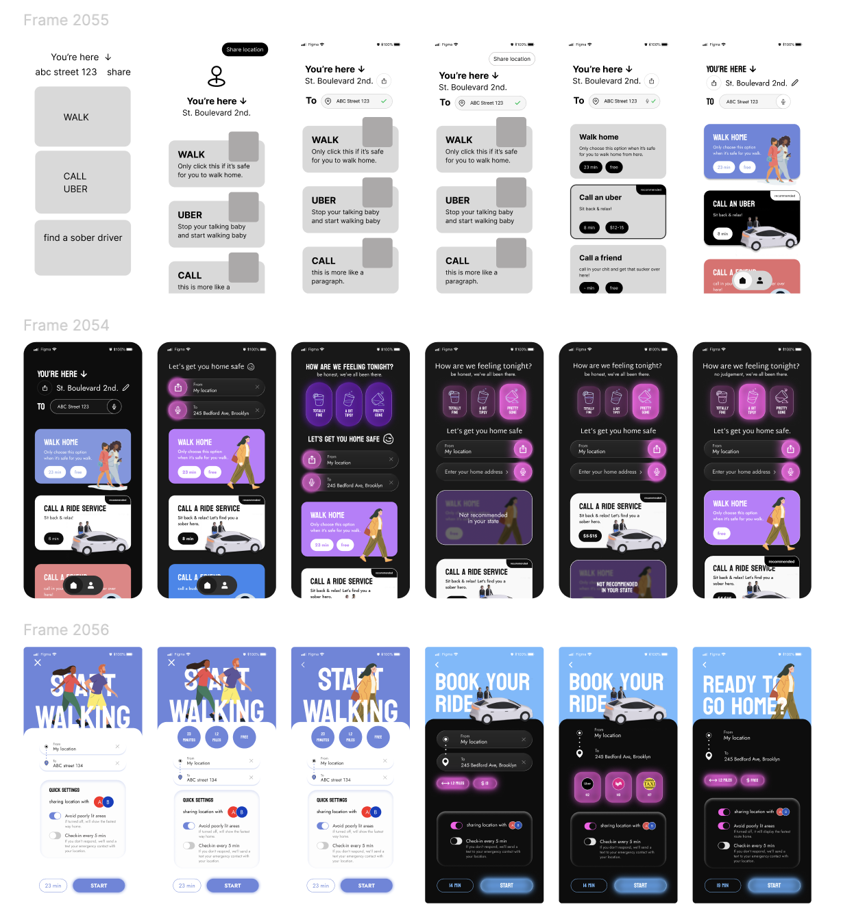
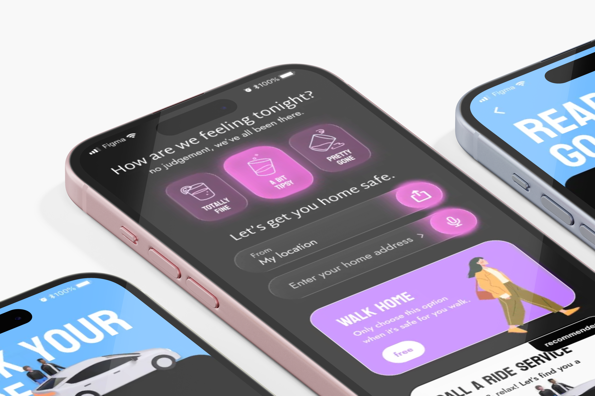
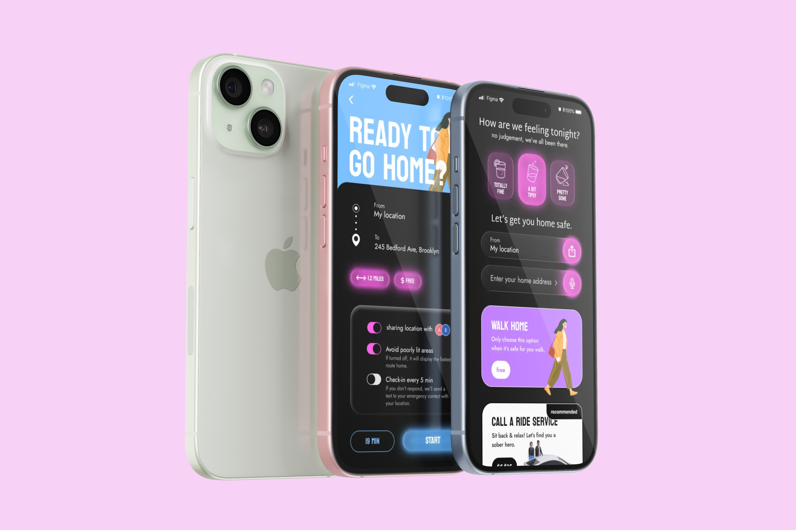

Context
Deze case maakte ik als onderdeel van een internationale
UX/UI design challenge georganiseerd door Marina Budarina Design
en gesponsord door Moonchild.ai.
De opdracht: ontwerp een late-night navigatie app voor gebruikers
die licht tot zwaar onder invloed zijn en veilig naar huis willen geraken.
De focus lag op eenvoud, duidelijkheid en visuele kwaliteit.
Uitdaging
Navigatie-apps gaan ervan uit dat gebruikers rationeel en aandachtig zijn. In deze context is dat net níet het geval.
Oplossing
Ik ontwierp een speelse maar gecontroleerde interface die inspeelt op
emotie, humor en veiligheid.
De gebruiker geeft eerst aan hoe hij of zij zich voelt
(“Totally fine”, “A bit tipsy”, “Pretty gone”).
Op basis daarvan past de app:
- de hoeveelheid informatie aan
- de navigatie-flow
- de nadruk op begeleiding en geruststelling
Mijn proces
Dit project was een snelle, iteratieve design challenge. Ik startte met het vertalen van de briefing naar duidelijke UX-prioriteiten: weinig focus, snelle keuzes en veiligheid eerst. Daarna werkte ik in korte rondes met wireframes en variaties, waarbij ik telkens hiërarchie, copy en interacties verfijnde. De focus lag niet op één perfecte flow, maar op het vergelijken en aanscherpen van opties tot de meest duidelijke en veilige ervaring.

Reflectie
Deze challenge bevestigde voor mij hoe belangrijk het is om
context boven features te plaatsen.
Met slechts twee schermen moest elk detail kloppen:
copy, hiërarchie, kleur en interactie.
Het resultaat is toont hoe designkan anticiperen op menselijk gedrag in niet-ideale omstandigheden.

